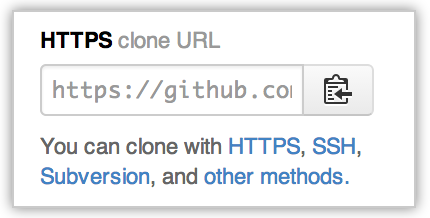
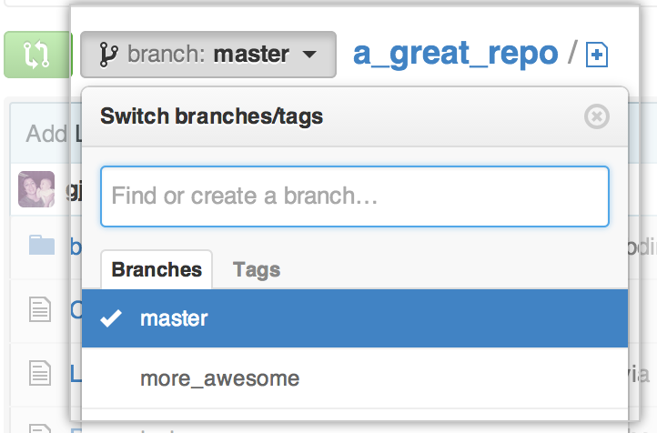

GitHub repositories can be accessed from both Git and Subversion (SVN) clients. This article covers using a Subversion client on GitHub and some common problems that you might run into.
GitHub supports Subversion clients via the HTTPS protocol. We use a Subversion bridge to communicate svn commands to GitHub.
Supported Subversion features on GitHub
Checkout
The first thing you'll want to do is a Subversion checkout. Since Git clones keep the working directory (where you edit files) separate from the repository data, there is only one branch in the working directory at a time.
Subversion checkouts are different: they mix the repository data in the working directories, so there is a working directory for each branch and tag you've checked out. For repositories with many branches and tags, checking out everything can be a bandwidth burden, so you should start with a partial checkout.
Start by browsing to the repository page on github.com to get the HTTPS clone URL:

Then, get your checkout ready:
Browse to the repository page on GitHub and copy the HTTPS clone URL:
-
Make an empty checkout of the repository:
svn co --depth empty https://github.com/user/repo # Checked out revision 1. cd repo
-
Get the
trunkbranch. The Subversion bridge maps trunk to the Git HEAD branch (which is usuallymaster).svn up trunk # A trunk # A trunk/README.md # A trunk/gizmo.rb # Updated to revision 1.
-
Get an empty checkout of the
branchesdirectory. This is where all of the non-HEADbranches live, and where you'll be making feature branches.svn up --depth empty branches Updated to revision 1.
Creating branches
You can also create branches using the Subversion bridge to GitHub.
From your svn client, make sure "master" is current by updating trunk:
svn up trunk # At revision 1.
Next, you can use svn copy to create a new branch:
svn copy trunk branches/more_awesome # A branches/more_awesome svn commit -m 'Added more_awesome topic branch' # Adding branches/more_awesome # Committed revision 2.
You can confirm that the new branch exists in the repository's branch dropdown:

You can also confirm the new branch via the command line:
git fetch # From https://github.com/user/repo/ # * [new branch] more_awesome -> origin/more_awesome
Making commits to Subversion
After you've added some features and fixed some bugs, you'll want to commit those changes to GitHub. This works just like the Subversion you're used to. Edit your files, and use svn commit to record your changes:
svn status # M gizmo.rb svn commit -m 'Guard against known problems' # Sending more_awesome/gizmo.rb # Transmitting file data . # Committed revision 3. svn status # ? test svn add test # A test # A test/gizmo_test.rb svn commit -m 'Test coverage for problems' # Adding more_awesome/test # Adding more_awesome/test/gizmo_test.rb # Transmitting file data . # Committed revision 4.
Switching between branches
To switch between branches, you'll probably want to start with a checkout of trunk:
svn co --depth empty https://github.com/user/repo/trunk
Then, you can switch to another branch:
svn switch https://github.com/user/repo/branches/more_awesome
Finding the Git commit SHA for a Subversion commit
GitHub's Subversion server exposes the Git commit sha for each Subversion commit.
To see the commit SHA, you should ask for the git-commit unversioned remote property.
svn propget git-commit --revprop -r HEAD https://github.com/user/repo
05fcc584ed53d7b0c92e116cb7e64d198b13c4e3
With this commit SHA, you can, for example, look up the corresponding Git commit on GitHub.